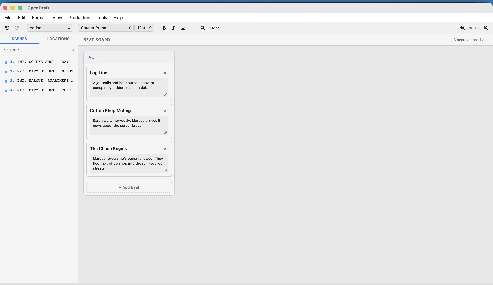

Beat Board
Plan your story's structure with beats organized by act.
What Are Beats?
A beat is a single story event or turning point. Screenwriters often plan their stories as a series of beats before writing the actual screenplay. Common examples:
- "Sarah discovers the letter" (inciting incident)
- "The team argues about the plan" (conflict)
- "Sarah makes her decision" (climax)
The Beat Board organizes these beats into acts, giving you a high-level view of your story's three-act (or multi-act) structure.
Opening the Beat Board
Open the Beat Board from View > Beat Board.

Working with Beats
Adding a Beat
Click the + Add Beat button within an act to create a new beat. Each beat has:
- Title — A short name for the beat (e.g., "Inciting Incident")
- Description — A longer description of what happens
Editing a Beat
Click on a beat's title or description to edit it directly.
Deleting a Beat
Click the delete button on a beat to remove it.
Working with Acts
Beats are organized into acts. The traditional screenplay structure uses three acts:
| Act | Purpose | Typical Length |
|---|---|---|
| Act 1 | Setup — introduce characters, world, and the central conflict | ~25% of script |
| Act 2 | Confrontation — rising action, complications, and obstacles | ~50% of script |
| Act 3 | Resolution — climax and conclusion | ~25% of script |
TV writers: Television scripts often use more than three acts (4, 5, or even 6). The Beat Board supports any number of acts.
Beats vs. Scenes
Beats and scenes are related but different:
- A beat is a story event in your outline. It lives on the Beat Board.
- A scene is a specific location and time in your screenplay. It starts with a Scene Heading.
- One beat might span multiple scenes, or several small beats might fit in one scene.
Use the Beat Board for planning, then write the actual scenes in the editor. Use Index Cards to bridge the gap between beats and scenes.
Plotlines and the Story Timeline
A plotline is one thread of the story: the A story, the B story, a character’s arc. Go to View > Panels > Story Timeline… to see them across the whole script.
- + Add Plotline adds one, named A Story, B Story, C Story and so on, each in its own colour. Click the name to rename it and the colour dot to change it. × deletes a plotline; its scenes and beats stay in the script, they just leave that plotline.
- Each plotline is a row, and each scene is a box as wide as its estimated screen time, from the same estimate as the status bar and Timing Report. Click a box to put that scene in the plotline, and click again to take it out. A scene can carry any number of plotlines.
- Click a scene number along the top to go to that scene.
- Beside each plotline: how many scenes and how much screen time it has, and how many beats. The No plotline row shows the scenes not yet in any.
On the Beat Board, the ≡ button on a beat card puts the beat in plotlines, and the card shows them as coloured tags. In the Scene Navigator, a coloured dot beside a scene marks each plotline it carries.
Plotlines are saved with the script, kept in backups and .odraft files, and shared with collaborators. They never print, and they don’t appear in PDF, Word, Final Draft or Fountain exports.